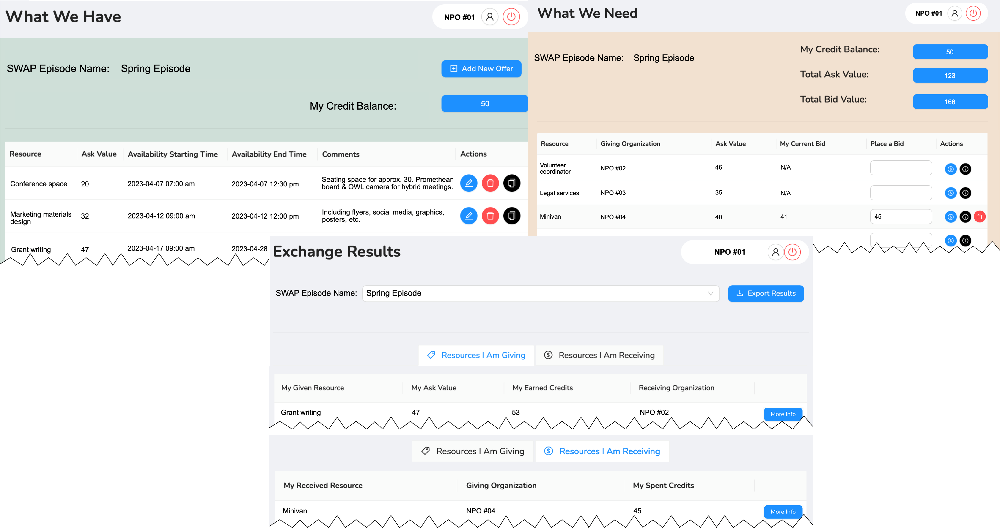
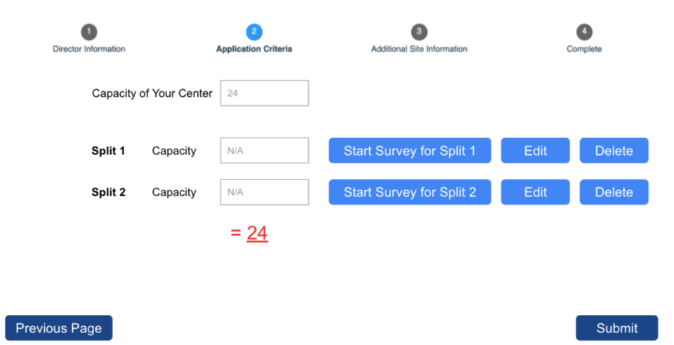
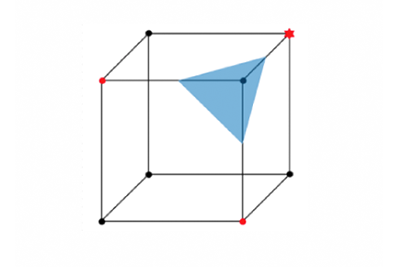

Platforms

Annie™ MOORE
Placement Optimization in Refugee Resettlement
Annie™ MOORE (Matching and Outcome Optimization for Refugee Empowerment) is a decision-support platform integrating machine learning and optimization to improve refugee resettlement. It helps agencies match refugee families to host communities, balancing predictive employment outcomes with human judgment. Field tests suggest Annie™ MOORE can improve short-run employment outcomes by 22%–38%, streamlining agency operations while preserving staff discretion.
Ahani, N., Andersson, T., Martinello, A., Teytelboym, A., & Trapp, A. C. (2021). Placement optimization in refugee resettlement. Operations Research, 69(5), pp. 1468-1486.

SWAP
SWAP is an interactive web-based platform that enables nonprofit organizations (NPOs) to exchange surplus resources and fulfill unmet needs through structured multilateral trade. NPOs post offers, place bids, and view matching results in intuitive rounds designed for ease of use. The platform supports live interaction, user feedback, and ongoing refinement to ensure low barriers to participation and high impact for resource-limited organizations.
Huang, W., Deshusses, E. J., Pazour, J. A., Telliel, Y. D., Stanlick, S. E., & Trapp, A. C. (2023). Empowering collective impact: Introducing SWAP for resource sharing. In Proceedings of the 3rd ACM Conference on Equity and Access in Algorithms, Mechanisms, and Optimization, pp. 1-12.

GOAT (Global Opportunities Allocation Tool)
GOAT optimizes and recommends placement of sophomore WPI students into global project centers, balancing student preferences with program capacity. Since 2017 it's been in use, annually placing over 1,000 students into international project centers. The platform uses integer optimization to recommend matches while preserving human oversight. Initially developed to address WPI's Interactive Qualifying Project (IQP) placements, GOAT increased top-choice matches, drastically reduced waitlists, and scaled placement capacity, all while supporting strategic growth of global programs.
Wiratchotisatian, P., Atef Yekta, H., & Trapp, A. C. (2022). Stability representations of many-to-one matching problems: An integer optimization approach. INFORMS Journal on Computing, 34(6), 3325-3343.

Finding Diverse Near-Optima
This free implementation identifies diverse and near-optimal solutions to binary
integer programs.
Trapp, A. C. & Konrad, R. A. (2015). Finding diverse optima and near-optima to binary
integer programs. IIE Transactions, 47(11), pp. 1300-1312.